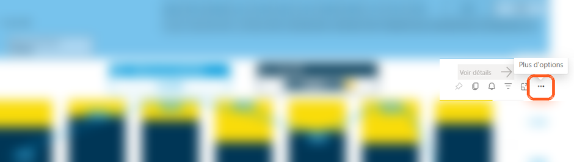
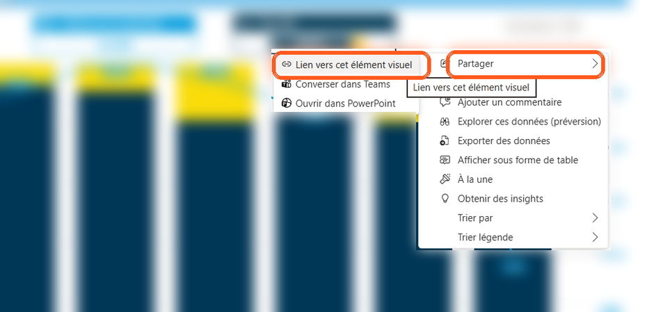
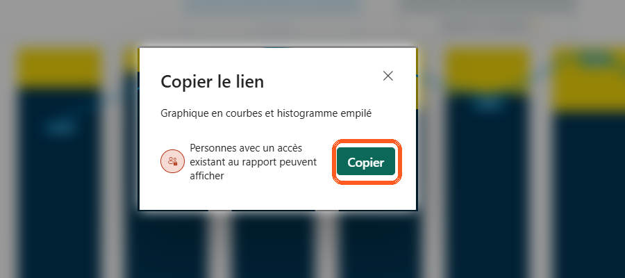

Aucun KPI chargé
Importez votre fichier Excel pour commencer
Plateforme de pilotage KPI
Importez votre fichier Excel pour commencer
Cliquez sur le bouton + en bas à droite (ou Nouveau KPI dans le menu). La fenêtre de création s'ouvre.
Renseignez l'intitulé (obligatoire), le type, le processus et une description. Ces informations sont communes à toutes les temporalités.
Chaque temporalité (Mensuelle, Hebdo, Quotidienne) a ses propres liens de rapport et son rituel. Changez d'onglet pour basculer : les liens affichés suivent la temporalité.
Un seul clic sur Enregistrer crée ou met à jour toutes les temporalités du KPI. Elles sont regroupées sur une même carte.
Sur n'importe quelle carte, cliquez sur le crayon ✏️. Vous retrouvez tous les champs et toutes les temporalités, prêts à être modifiés. Décochez une temporalité pour la retirer.
Choisissez un site puis cliquez sur Ouvrir : le rapport s'ouvre dans un nouvel onglet. En changeant de temporalité, le site choisi reste sélectionné et pointe vers le bon lien.
Dans Power BI, ouvrez le rapport puis suivez ces étapes pour copier le lien d'un visuel.

Survolez le visuel, puis cliquez sur les trois points ⋯ (« Plus d'options ») en haut à droite du graphique.

Dans le menu, choisissez Partager, puis Lien vers cet élément visuel.

Dans la fenêtre « Copier le lien », cliquez sur Copier. Le lien du visuel est maintenant dans votre presse-papier.
Revenez ici et collez le lien dans le champ du bon site (Logistiport, MG + Débords, Armateur ou Global), pour la temporalité voulue.
Créez une fiche d'annuaire directement dans l'application. Elle est conservée même après un ré-import Excel et synchronisée entre vos appareils.
Renseignez les liens et le rituel pour chaque temporalité. Changez d'onglet pour basculer sur les liens correspondants.
Synchronise automatiquement votre annuaire KPI et vos favoris entre tous vos appareils, via votre propre projet Firebase gratuit.
⚪ Synchronisation non configurée
file://).
Dans ce mode, la synchronisation cloud est impossible : Firebase refuse les connexions
sans véritable adresse web. De plus, les données enregistrées ici sont séparées de celles
de la version en ligne. Ouvrez l'application via son adresse https://… (GitHub Pages)
pour que la synchronisation fonctionne.
Tapez le début d'un intitulé pour voir, temporalité par temporalité, quels liens de site sont réellement enregistrés sur cet appareil.
Une copie est enregistrée automatiquement avant chaque réception de données du cloud. Vous pouvez revenir à un état antérieur.
En cas de données divergentes entre appareils, désignez celui qui a les BONNES données et écrasez le cloud avec, pour repartir sur une base saine.
Exportez toutes vos fiches dans un fichier Excel (sauvegarde lisible et ré-importable), ou importez un fichier Excel pour créer / compléter vos fiches. Les liens de chaque site sont conservés comme liens cliquables.
Ajoutez, renommez ou supprimez les périmètres proposés dans les fiches KPI (par défaut : Logistiport, MG + Débords, Armateur, Global). Les modifications sont partagées et synchronisées.
Fiches supprimées de l'annuaire. Cochez celles que vous souhaitez réafficher.
Créations, modifications et suppressions de fiches, avec leur auteur et leur date. L'historique est partagé entre tous les appareils synchronisés.